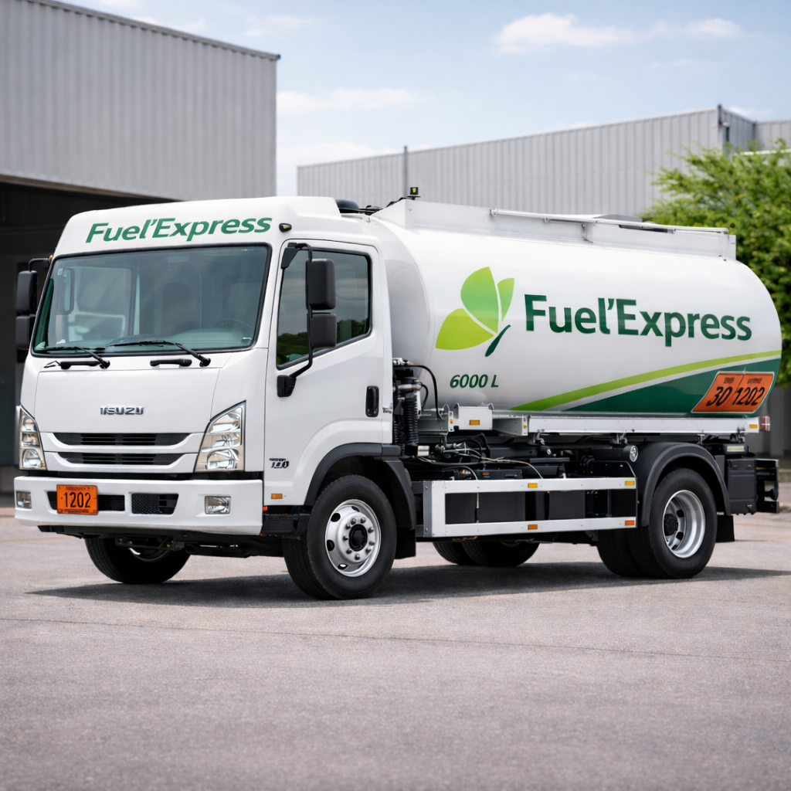
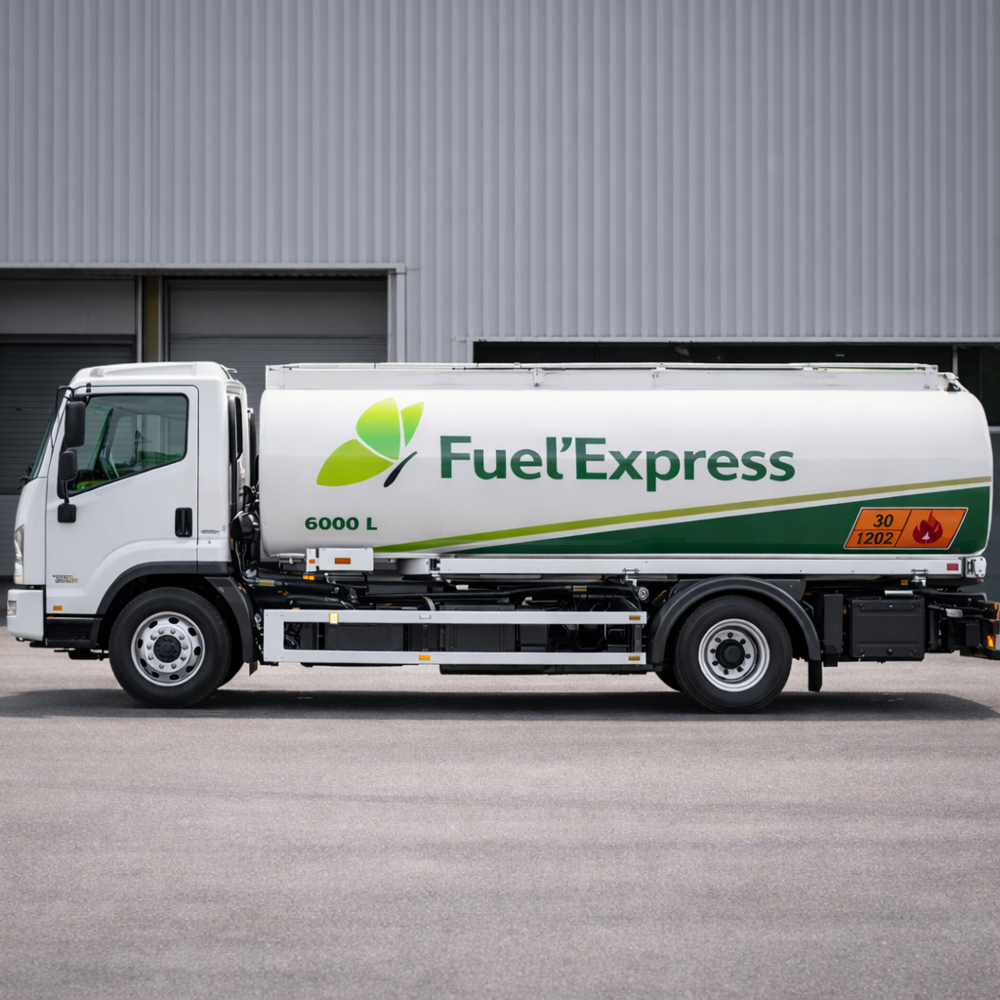

Fuel’Express est une solution innovante de livraison de carburant sur
site, destinée aux professionnels en RDC et conçue pour sécuriser,
structurer et professionnaliser l’approvisionnement énergétique en
milieu urbain.
Elle permet aux entreprises et aux particuliers d’accéder à un
carburant fiable, livré directement sur leurs sites d’exploitation ou
de résidence, à travers un dispositif logistique organisé, traçable et
sécurisé, garantissant continuité d’activité, maîtrise des coûts et
sérénité opérationnelle.
Fuel’Express s’appuie sur une flotte moderne de véhicules intelligents
conçus pour répondre aux exigences les plus strictes du transport et de
la distribution de carburant. Notre flotte est composée de véhicules
spécialement adaptés à différents cas d’usage :
• Véhicules légers pour les livraisons urgentes et les volumes limités.
• Camions-citernes pour les livraisons multiples ou les volumes
supérieurs à 1000 litres.

L ’Applicaton mobile Fuel'Express constitue l'interface opérationnelle du service.
Elle permet aux utilisateurs de commander, suivre et gérer leur
carburant en toute simplicité, depuis un smartphone ou un terminal
connecté.
Conçue pour répondre aux besoins des particuliers, des entreprises et
des équipes opérationnelles, l’application offre une expérience fluide,
sécurisée et orientée performance.
Un service plusieurs usages
Déclinée en plusieurs versions, l’application structure l’ensemble de l’écosystème et garantit transparence, contrôle et continuité énergétique.
Pour les particuliers et clients simples, avec un accès fluide à la commande et au suivi des livraisons.
Pour les entreprises et clients corporate, avec des outils avancés de contrôle, de reporting et de gestion de la consommation.
La version standard de l’application Fuel’Express s’adresse aux utilisateurs individuels et aux consommateurs occasionnels souhaitant se procurer du carburant de manière simple, rapide et fiable afin de préserver leur confort.
En quelques clics seulement
vous pouvez commander du carburant comme vous commanderiez une pizza et être livrés directement sur le lieu de votre choix, sans déplacement vers une station-service ni aucune autre contrainte logistique.
Fuel'Express Pro
Conçue comme un outil de pilotage stratégique de l’approvisionne ment en carburant, elle intègre des mécanismes d’analyse avancée et d’intelligence arti cielle pour aider les organisations à sécuriser leurs opérations, maîtriser leurs coûts et optimiser leur consommation énergétique tout en améliorant leur empreinte carbone.
La solution offre des fonctionnalités avancées de
PLANIFICATION DES LIVRAISONS, DE SUIVI DES VOLUMES, DE REPORTING
DÉTAILLÉ ET DE CONTRÔLE DES ACCÈS INTERNES
Fuel’Express Pro transforme votre gestion du carburant en un PROCESSUS
STRUCTURÉ, MESURABLE ET AUDITABLE, au service de la performance
opérationnelle et de la continuité de vos activités.
REPORTING ET HISTORIQUE
MONITORING DU NIVEAU DE FUEL ET DE LA CONSOMMATION
TRACKING EN TEMPS REEL DU CONVOI JUSQU'A LA LIVRAISON
NOTIFICATION EN CAS DE CONSOMMATION ANORMALE,FRAUDE, VOL ETC.